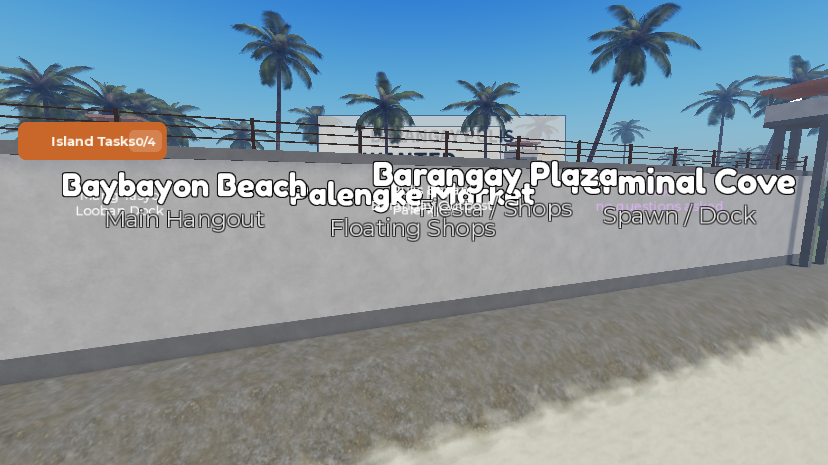

Phase E: 10/15/20-minute sentences, prison stars over the head, barred prison walls
What was asked
- Item 13 — "adjust prison sentence to 10mins first offence and so on". The user then said "max is only 3 lets do 5 mins per offence", so: 10, 15, 20 minutes, capped at the third.
- Item 17 (the display half) — "if player go to prison, it should show on top of player like a name that this player already come from prison and how many star, 6 star meaning very bad person". The police response to stars is in Phase F.
- Item 11 — "make prison wall like a bar/screen, so player outside can easily see and taunt prisoner inside, make the wall big enough so prisoner cannot just jump over the wall".
1. Sentences grow with the record (item 13)
PoliceService: the flatSENTENCE_CAUGHT = 2/SENTENCE_VOTED = 2island days (48 real minutes) are gone.SENTENCE_MINUTES = {10, 15, 20}is indexed by how many times the player has been jailed, including this time, and capped at the third. Every path goes through it: an NPC officer's booking, a player pulis's arrest, and a community vote. Minutes are converted to the island days the rest of the file counts in (24 real minutes to a day).- The count lives in a new, separate record,
IslaMarahuyo_Jail_v1keyRecord_<userId>={offenses}, because the sentence keyJail_<userId>is deleted on release. It is read on join, raised on each sentence, and written withSetAsync. If the read fails, the player is treated as clean but nothing is cached or written, so a DataStore blip can never wipe a record. sentencePlayer(player, reason, days?)now returns the days given.daysis only passed by Studio'sDebugJail:DebugJail:Fire(player)now uses the record, andDebugJail:Fire(player, days)still forces a length.- The officer's toast reads "<name> booked -- N minutes.", and the startup log says "10/15/20-minute sentences". The service comment was updated: a sentence is now 5–9 restocks at the tuned credit, or 1 revive.
PoliceStation.Harapan_RulesPlaquenow reads: "Jail: 10 min, then 15, then 20. / Every jailing is a star on your name. / Community vote: 66% to jail. / Work it off at the duty desk."
2. Prison stars over the head (item 17, display)
- Every jailing is a star.
PoliceServicepublishesPlayer.PrisonStars= min(offences,MAX_STARS = 6) andPlayer.Offenses, on join and on each sentence. Stars never expire (the user did not ask for decay). - new
ServerScriptService.JailTagServicehangsHead.JailTag, a BillboardGui 220×22 at 4.8 studs, aboveRoleTag(3.95) andTitleTag(3.1),MaxDistance = 90. It reads "EX-PRESO ★★" in amber (1–2 stars), orange (3–4) or red (5), and "MAPANGANIB ★★★★★★" ("dangerous") in red at 6. It is empty and disabled for a clean record. NameTagControllerhides and showsJailTagwith the other tags when a viewer toggles names.
3. Barred prison walls (item 11)
The walls were already 14 studs of concrete (y 18–32) with a cap and barbed wire, about twice a default jump (7.2), so the height was kept. Escape is also enforced in code: anyone serving time outside Prison.PrisonBounds is put back in their cell. What changed is that you can now see through: the five solid faces became railings.

- new
Prison.Walls.Bars(349 parts): vertical metal bars 0.3 studs thick every 1.2 studs (a 0.9 gap, too narrow for a body) from the top of the foot (y 19.6) to the underside of the cap (y 32). Two flat rails run through them at 33% and 80% height, with concrete pillars about every 12 studs and at the ends. Metal colour(70,74,80), concrete(196,190,176). - The caps, feet,
WirePosts andWireare unchanged, as are the gate, the towers andPrisonBounds. - retired
Wall_South,Wall_North_W,Wall_North_E,Wall_East,Wall_West→ServerStorage._Retired.Workspace_Prison_Walls__SolidFaces. No script referenced them.
All changes
| Path | What | |
|---|---|---|
| edited | ServerScriptService.PoliceService | SENTENCE_MINUTES, MAX_STARS, records (recordOf, showRecord, Record_ key), sentencePlayer(player, reason, days?), call sites, texts |
| new | ServerScriptService.JailTagService | overhead star tag |
| edited | ReplicatedStorage.NameTagController | toggles JailTag too |
| edited | PoliceStation.Harapan_RulesPlaque.BillboardGui.TextLabel | new rules text |
| new | Workspace.IslaMarahuyo.Prison.Walls.Bars | 349 bar/rail/pillar parts |
| retired | 5 solid wall faces | see above |
New attributes: Player.PrisonStars (1–6, nil when clean) and Player.Offenses. New DataStore key: IslaMarahuyo_Jail_v1 / Record_<userId>.
How it was tested
- Playtest with the Studio hooks, a clean record to start:
DebugJail×4 withDebugReleasein between gave 10.0, 15.0, 20.0, 20.0 minutes (JailDays× 24), withPrisonStars/Offenses1, 2, 3, 4. After a release the stars stayed andJailedcleared. The tag read "EX-PRESO ★" after one and "EX-PRESO ★★★★" after four. - A real arrest (the Phase F ronda: three axe warnings, taser, cuffs, escort) booked the player for 20 minutes as their 5th offence, and a raid arrest made the 6th. The tag then read "MAPANGANIB ★★★★★★" in red.
- The record persisted across playtests: a new session loaded 5 stars. Cleanup: the test account's
Record_8745800367(6 offences) was removed from the live DataStore after testing, and no sentence record was left. - The barred walls: edit-mode screenshots from outside, before and after.
Not verified / known gaps
- No one has tried to climb or squeeze through the new bars in a playtest. The 0.9-stud gap and 12.4-stud height were chosen on paper, and
PrisonBoundsputs escapees back anyway. - The community-vote and player-pulis arrest paths use the new lengths too, but only the NPC booking and
DebugJailwere exercised. - Stars never go away. If the user wants them to fade (for example one per real day clean), that belongs in
PoliceService.recordOfandshowRecord. - The tag stacks at 4.8 studs even when a player has no job chip at 3.95, which leaves a gap between the title and the stars.
- The station's other signs (
Floor.Sign, the WANTED poster) and the JusticeHud texts were not reviewed for "days" wording beyond the rules plaque and the arrest toast.